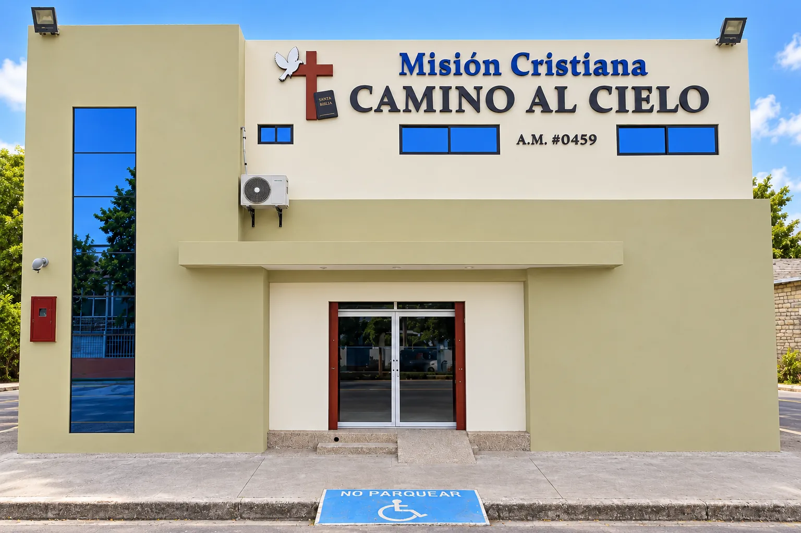

Nuestra familia en acción
Elige una colección.
Descubre su historia.
Selecciona un ministerio para abrir sus fotografías en una página dedicada.
 AdoraciónCultos y alabanzaVer fotografías →
AdoraciónCultos y alabanzaVer fotografías →
 Soldados de CristoCaballerosVer fotografías →
Soldados de CristoCaballerosVer fotografías →
 Mujeres BendecidasDamasVer fotografías →
Mujeres BendecidasDamasVer fotografías →
 Guerreros de la FeJóvenesVer fotografías →
Guerreros de la FeJóvenesVer fotografías →
 Niños para CristoNiñosVer fotografías →
Niños para CristoNiñosVer fotografías →

Nuestra casaIglesia e historiaVer fotografías →